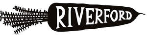

Trade Mark Journal No.2025/045 7 November 2025
UK00004284140 27 October 2025 (16,29,30,31,32,33,35,39,43)

- Class 16
- Paper, cardboard; books; printed matter; instructional and teaching material (except apparatus); recipe cards; plastic materials for packaging (not included in other classes); recyclable paper and cardboard for packaging; cardboard boxes.
- Class 29
- Meat, fish, poultry and game; meat extracts; preserved, dried and cooked fruits and vegetables; sausages; bacon; jellies, jams, compotes; eggs, milk and milk products; edible oils and fats; prepared meals; soups and potato crisps, vegetables and pulses; butter, cheese, cream, crème fraiche, yoghurt; fruit salads; vegetable salads; lentils; pickles; charcuterie; preserved herbs; marmalade; all of the aforesaid being organically produced or containing organic produce.
- Class 30
- Coffee, tea, cocoa, sugar, rice, tapioca, sago, artificial coffee; flour and preparations made from cereals, bread, pastry and confectionery, edible ices; honey, treacle; yeast, baking-powder; salt, mustard; vinegar, sauces (condiments); spices; ice; sandwiches; prepared meals; pizzas, pies and pasta dishes, baked products including cakes, puddings and speciality breads; fruit sauces; all of the aforesaid being organically produced or containing organic produce.
- Class 31
- Agricultural, horticultural and forestry products; live animals; fresh fruits and vegetables, seeds, natural plants and flowers; herbs; nuts; fresh pulses; malt; organic foodstuffs; all of the aforesaid being organically produced or containing organic produce.
- Class 32
- Beers; mineral and aerated waters; non-alcoholic drinks; fruit drinks and fruit juices; syrups and other preparations for making beverages; shandy, soda water; sherbets; non-alcoholic beers and wines; organically produced beers; organically produced non-alcoholic beverages; all of the aforesaid being organically produced or containing organic produce.
- Class 33
- Alcoholic beverages (except beers); alcoholic wines; sparkling wines; cider; spirits and liqueurs; alcopops; alcoholic cocktails; all of the aforesaid being organically produced or containing organic produce.
- Class 35
- Organisation, operation and supervision of loyalty and incentive schemes; The bringing together, for the benefit of others, of books, printed matter, instructional and teaching material (except apparatus), recipe cards, plastic materials for packaging (not included in other classes), recyclable paper and cardboard for packaging, cardboard boxes, meat, fish, poultry and game, meat extracts, preserved, dried and cooked fruits and vegetables, sausages, bacon, jellies, jams, compotes, eggs, milk and milk products, edible oil and fats, prepared meals, soups and potato crisps, vegetables and pulses, fruit sauces, butter, cheese, cream, crème fraiche, yoghurt, fruit salads, vegetable salads, lentils, pickles, charcuterie, preserved herbs, marmalade, coffee, tea, cocoa, sugar, rice, tapioca, sago, artificial coffee, flour and preparations made from cereals, bread, pastry and confectionary, edible ices, honey, treacle, yeast, baking powder, salt, mustard, vinegar, sauces (condiments), spices, ice, sandwiches, prepared meals, pizzas, pies and pasty dishes, baked products including cakes, puddings and speciality breads, agricultural, horticultural and forestry products, live animals, fresh fruits and vegetables, seeds, natural plants and flowers, herbs nuts, fresh pulses, malt, beers, mineral and aerated waters, non-alcoholic drinks ,fruit drinks and fruit juices, syrups and other preparations for making beverages, shandy, soda water, sherbets, non-alcoholic beers and wines, organically produced beers, organically produced non-alcoholic beverages, alcoholic beverages (except beers), alcoholic wines, sparkling wines, cider, spirits and liqueurs, alcopops and alcoholic cocktails; all of the aforesaid being organically produced or containing organic produce, trailing customers to conveniently view and purchase those goods by mail order or by means of telecommunications or from an internet web site.
- Class 39
- Transport; packaging and storage of goods; transportation services; distribution and delivery of goods; distribution services; delivery of groceries, foodstuff and household goods; delivery of recipe boxes and food boxes; all of the aforesaid being organically produced or containing organic produce.
- Class 43
- Services for providing food and drink; restaurant, bar and catering services; booking and reservation services for restaurants; all of the aforesaid being organically produced or containing organic produce.
Riverford Organic Farmers Ltd
Representative: Withers & Rogers LLP